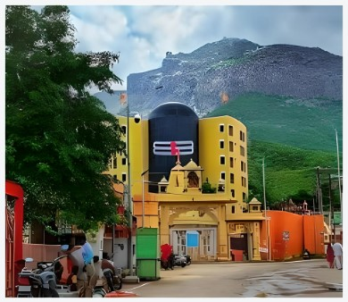
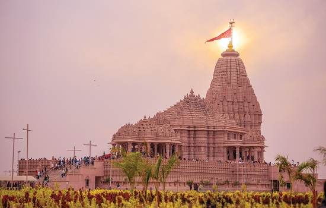
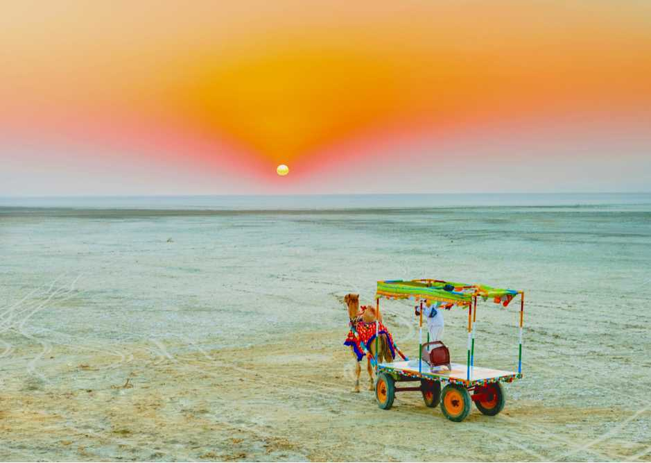
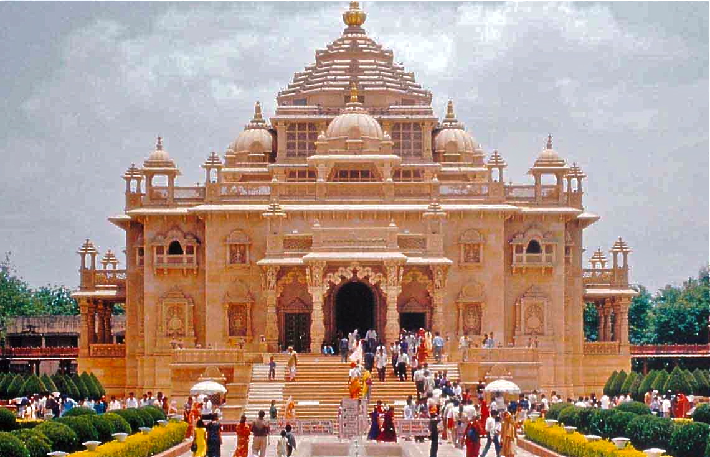
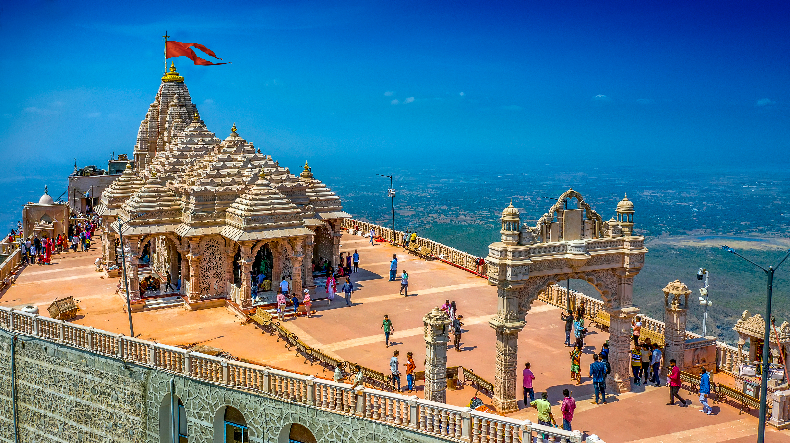
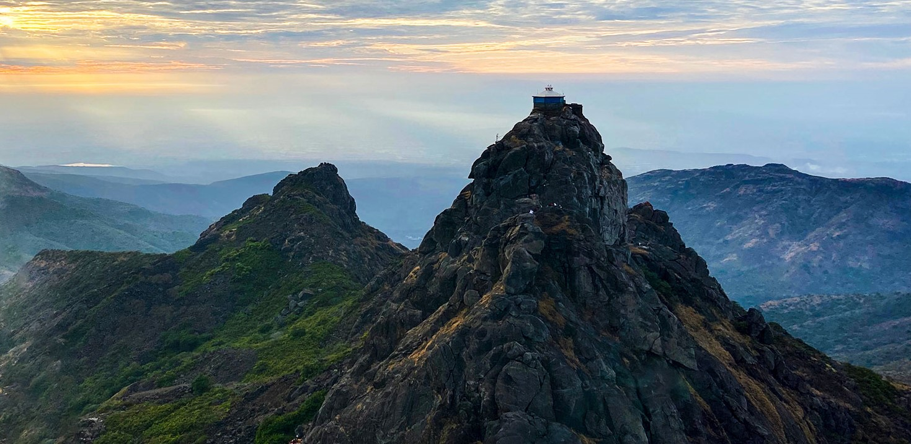
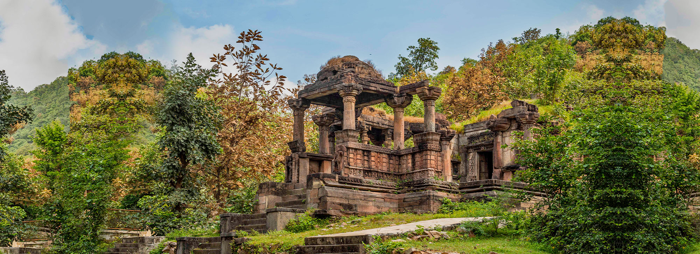
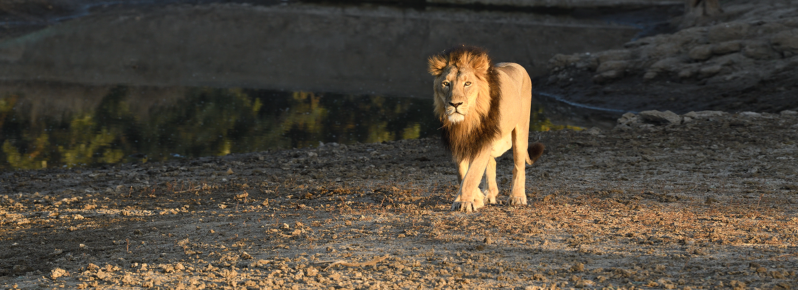

.jpg)


.jpg)


The site of Somnath has been a pilgrimage site from ancient times on account of being a Triveni Sangam: the confluence of three rivers namely Kapila, Hiran and Saraswati. The Gurjara-Pratihara king Nagabhata II recorded that he has visited tirthas in Saurashtra, including Someshvara, an alternative name for the temple.
Dwarka is believed to have been the first capital of Gujarat. The city's name literally means the “gateway to heaven” in Sanskrit, as Dwar means “gate” and ka references “Brahma”. Dwarka has also been referred to throughout its history as “Mokshapuri”, “Dwarkamati”, and “Dwarkavati”.

Bhavnath is a locality in Junagadh city of Gujarat, India. It sits near the Girnar mountain range, close to Girnar Taleti, the place from where pilgrims have to ascend on foot to get to temples on Girnar hills.

Khodaldham temple is largest temple in Kagvad area which idols of MAA Khodiyar. Temple is located at Kagvad village on Jetpur road. It is well maintained, cleaned. Temple have BIG gate, large campus & also have mini-bus facility for old age person to visit temple.

The Statue of Unity is an iconic 182 meters tall tribute to one of India's foremost Statesmen and leaders – Sardar Vallabhbhai Patel.

Over the years, the region eventually became a seasonal marshy salt desert. During monsoons, the marsh fills up with water and the wetland extends from the Gulf of Kutch on the west through to the Gulf of Cambay on the east.

Swaminarayan Akshardham in Gandhinagar, Gujarat, India is a large Hindu temple complex inspired by Yogiji Maharaj (1892–1971) the fourth spiritual successor of Swaminarayan, and created by Pramukh Swami Maharaj (1921–2016), the fifth spiritual successor of Swaminarayan according to the BAPS denomination of Swaminarayan Hinduism.

At the summit of Pavagadh hill, 800 m above sea level, is the temple to Mother Kali, which is the oldest in the area, dating from the 10th-11th centuries. Hindu pilgrims were coming to visit this temple from long before the development of Champaner as a major city, and they continued for hundreds of years after its decline, right up to the present day.

This sacred mountain also known as Revatak Parvata, rising dramatically from the plains, is covered with Jain and Hindu temples. Pilgrims from far and wide come to tackle the long climb up 10,000 stone steps to the summit, which is best begun at dawn. Be prepared to spend a full day if you want to reach the uppermost temples. Ascending in the early morning light is a magical experience, as pilgrims and porters trudge up the steps.

Adi-kadi Vav, built in the 15th century, is carved entirely out of hard rock. A narrow flight of 120 stairs cuts down through the stone to meet the well shaft deep in the stone. Two different legends claim to explain the name of the well.

Tucked away in a forest, there are secrets to be revealed. An ancient city, a gateway to Rajasthan. A hiding place for rulers, concealed from enemies, citizens, angry wives, even from the sun, tucked between sacred hills on the east and west. And the mystery of abandonment, decay.

This forested, hilly, 1412-sq-km sanctuary about halfway between Veraval and Junagadh is the last refuge of the Asiatic lion (Panthera leopersica). Taking a safari through the thick, undisturbed forests is a joy – even without the added excitement of spotting lions, other wildlife and myriad bird species. Access to the sanctuary is by safari permit only, bookable in advance online.